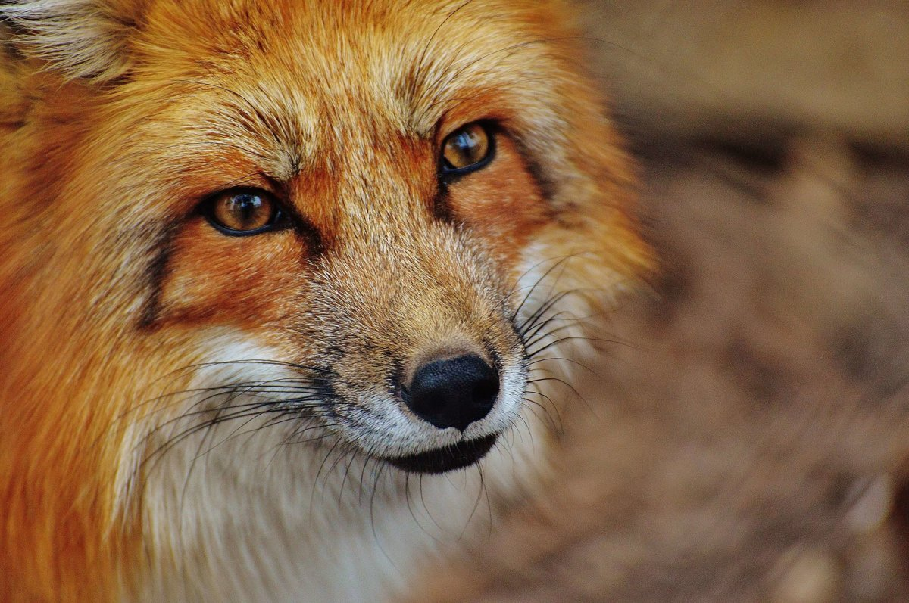

The red fox
Widely held as a symbol of animal cunning, the red fox is the subject of considerable folklore. The red fox has the largest natural distribution of any land mammal except human beings. In the Old World it ranges over virtually all of Europe, temperate Asia, and northern Africa, and in the New World it inhabits most of North America. Introduced to Australia, it has established itself throughout much of that continent. The red fox has a coat of long guard hairs, soft fine underfur that is typically a rich reddish brown, often a white-tipped tail, and black ears and legs. Colour, however, is variable. In North America black and silver coats are found, with a variable amount of white or white-banded hair occurring in a black coat. A form called the cross, or brant, fox, found in both North America and the Old World, is yellowish brown with a black cross extending between the shoulders and down the back. The Samson fox, a mutant strain of red fox found in northwestern Europe, lacks the long guard hairs, and the underfur is tightly curled.
Appearance
Red foxes are generally about 90–105 cm (36–42 inches) long, about 35–40 cm (14–16 inches) of this being the tail. They stand about 40 cm at the shoulders and weigh about 5–7 kg (10–15 pounds). Their preferred habitats are mixed landscapes, but they live in environments ranging from Arctic tundra to arid desert. Red foxes adapt very well to human presence, thriving in areas with farmland and woods, and populations can be found in many large cities and suburbs. Mice, voles, and rabbits, as well as eggs, fruit, and birds, make up most of the diet, but foxes readily eat other available food such as carrion, grain (especially sunflower seeds), garbage, pet food left unattended overnight, and domestic poultry. On the prairies of North America it is estimated that red foxes kill close to a million wild ducks each year. Their impact on domestic birds and some wild game birds has led to their numbers often being regulated near game farms and bird-production areas.
Fox Life
Red foxes mate in winter. After a gestation period of seven or eight weeks, the female (vixen) gives birth to 1–10 or more young (5 is average), called pups (or, less frequently, cubs or kits). Birth takes place in a den, which is commonly a burrow abandoned by another animal. It is often enlarged by the parent foxes. The cubs remain in the den for about five weeks and are cared for by both parents throughout the summer. The young disperse in the fall, once they are fully grown and independent. The red fox is hunted for sport (see foxhunting) and for its pelt, which is a mainstay of the fur trade. Fox pelts, especially those of silver foxes, are commonly produced on fox farms, where the animals are raised until they are fully grown at approximately 10 months of age. In much of their range, red foxes are the primary carrier of rabies. Several countries, especially the United Kingdom and France, have extensive culling and vaccination programs aimed at reducing the incidence of rabies in red foxes.
| countries | living areas | diet |
|---|---|---|
| South America | desert | mice |
| North America | tundra | rabbit |
| Arctic | forest | eggs |
| Europe | - | fruit |
| Africa | - | birds |
| - | - | grain |
| - | - | carrion |